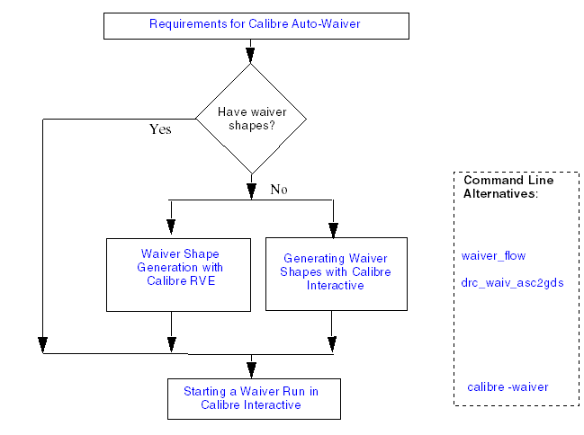

xxx
Calibre Auto-Waivers Flow in Calibre Interactive and Calibre RVE
Calibre Auto-Waivers can be used with Calibre Interactive and Calibre RVE. You can generate waivers, set many options, and start a waiver run.
Calibre Auto-Waivers Flow in Calibre Interactive and RVE

Parent Topic:
Calibre Auto-Waivers in Calibre Interactive
Related Topics
Requirements for Calibre Auto-Waivers
Waiver Shape Generation with Calibre RVE [Calibre Auto-Waivers User's and Reference Manual]
Generating Waiver Shapes with Calibre Interactive
Starting a Waiver Run in Calibre Interactive
waiver_flow [Calibre Auto-Waivers User's and Reference Manual]
drc_waiv_asc2gds [Calibre Auto-Waivers User's and Reference Manual]
Physical Verification with Waivers [Calibre Auto-Waivers User's and Reference Manual]
Calibre® Interactive™ User’s Manual, v2021.2
Unpublished work. © 2021 Siemens
Browser Requirements